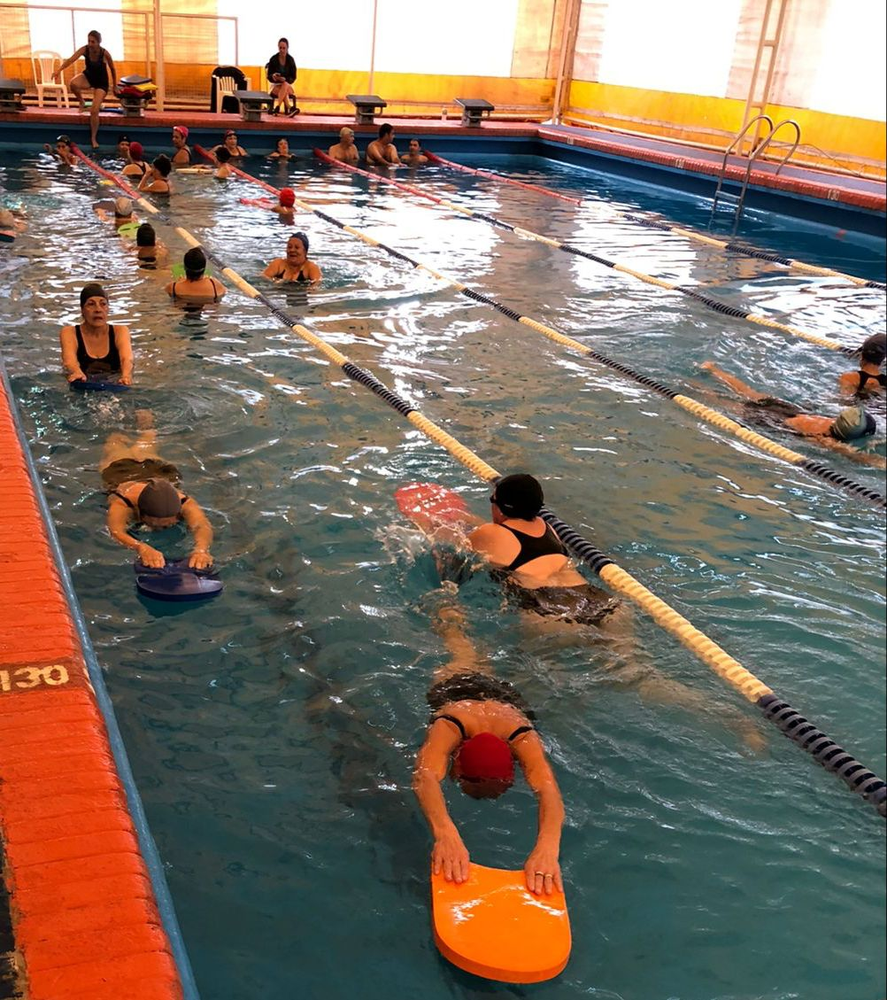

Actividades
Clase de Aquagym para Adultos Mayores


El aquagym para mayores se presenta como una alternativa muy atractiva porque reúne todos los requisitos que se le exigen a una actividad física apta para personas mayores: es seguro, permite trabajar todo el cuerpo, se realiza en un entorno original que resulta motivador.
Natación
La natación es un deporte muy completo que es muy útil como actividad recreacional y de terapia física para recuperación de ciertas lesiones. Por lo anterior, es una actividad muy recomendada para los adultos mayores ya que es de bajo impacto para las articulaciones y es un ejercicio aeróbico que ayuda a trabajar también la fuerza de los músculos.
Movimiento Expresivo


El Movimiento Expresivo es una Gimnasia que nos permite mantenernos vitales, flexibles, alegres, y sanos.Con música, Desde la diversión, la distensión, y en encuentro con nuestros pares, trabajamos: Movilidad articular, Ejercicio aeróbico, Respiración, Relajación, Estiramiento. Así buscamos: Desarrollar el autoconocimiento, tomando herramientas que nos ayuden a ser más protagonistas en nuestra propia salud. Hace bien al Corazón.Descargamos tensiones, generamos nueva energía, potenciamos el nivel de descanso y así mejoramos el ánimo y la conexión con la vitalidad. Complementa tratamientos de diversas patologías óseo articulares, musculares, circulatorias, cardíacas. Contribuye a mejorar la postura.
Newcom


El newcom es una disciplina pensada para ser jugada por personas mayores de 60 años. Se trata de una adaptación del Voley, en el que la pelota no se golpea sino que se atrapa y se lanza por arriba de la red. Se busca fomentar la integración, la formación y el desarrollo deportivo de los adultos mayores.